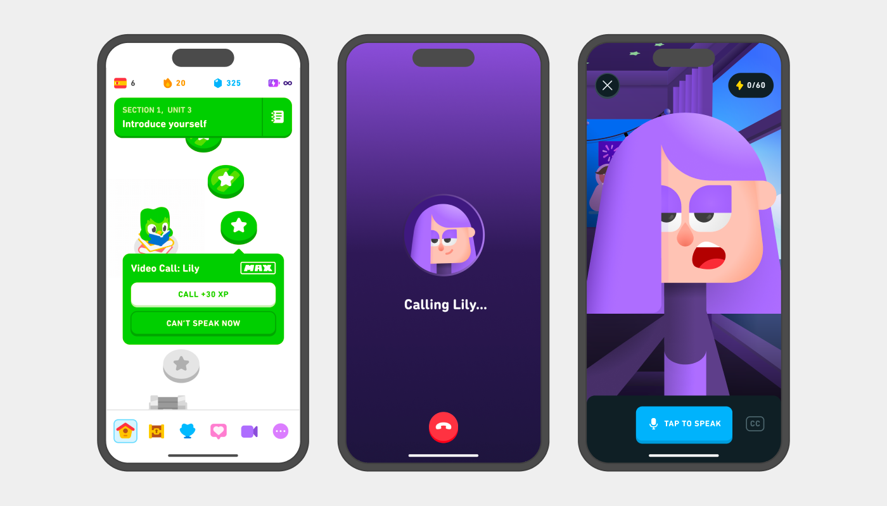
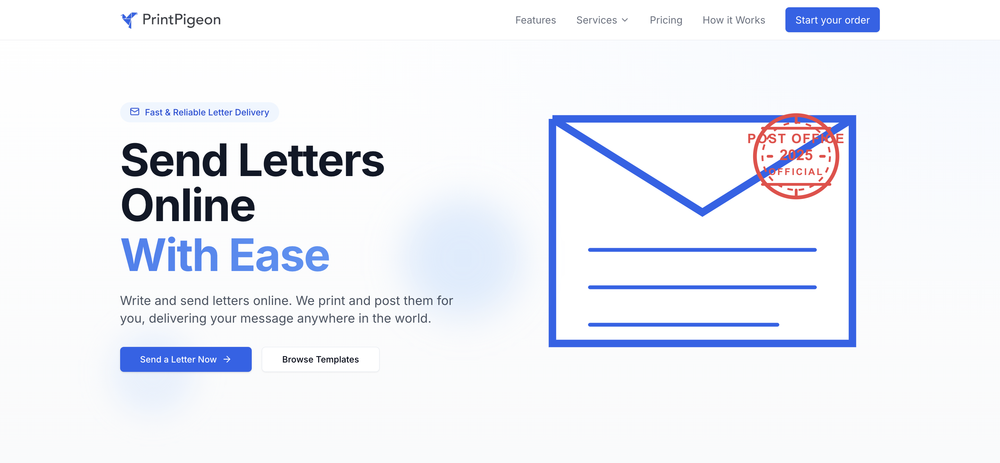
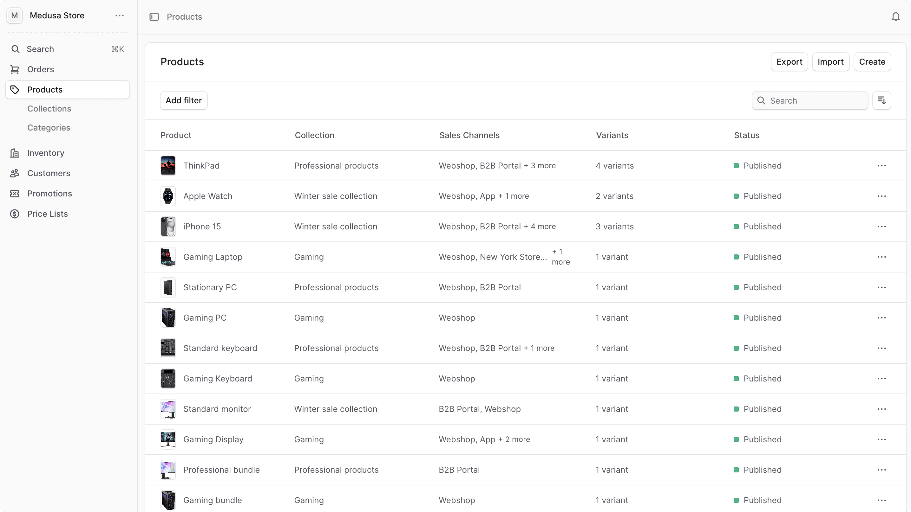
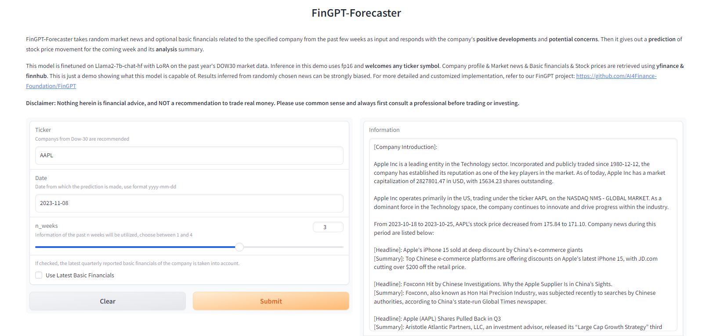
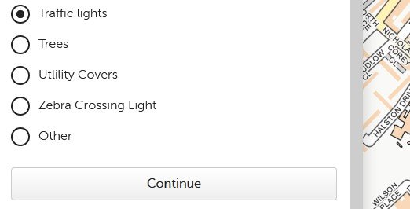

AI로 만든 서비스를
실제로 통하게 만들기
바이브코딩 MVP의 완성도를 높이는 사용성, 검증, 운영 설계
구현한 기능을
사용자의 완료 경험으로 연결합니다.
AI 서비스 PM & Engineer
구름 해커톤 특강
MVP 다음 단계의
네 가지 질문
45분 본강의와 15~20분 질의응답
한 경로를 끝까지
첫 사용·오류·저장까지
사용자의 장면으로 진단
잘 만든 경험을 해부하기
디자인 스킬·실제 서비스
역할별 검증과 증거
출시 가능한 구조
평가·권한·실패 복구
온디바이스와 호출 비용
우리 MVP에 옮기기
분야별 저장소·화면 비교
48시간 개선 계획
AI 서비스 PM & Engineer / 서울시립대·아주대 AI 관련 강의
『딥러닝의 정석』 2판 공동 번역
첫 사용자의 계정에서
다시 시작하기
시연 전에 확인할 첫 사용, 빈 데이터, 저장 결과
“제 컴퓨터에서는
잘 되는데요.”
개발자의 계정업로드, 요약, 저장까지 정상
처음 사용하는 사람어디서 시작해야 할지 모름
새로 만든 계정저장한 결과를 찾을 수 없음
강연용 대화 예시입니다. 실제 사용자 기록이 아닙니다.
완료 경험으로
제품의 품질을 판단합니다
완료율, 소요 시간, 재작업으로 살펴보는 핵심 경로
완료율
시작한 사용자 중
도움 없이 핵심 작업을 끝낸 비율
소요 시간
작업을 시작한 순간부터
확인 가능한 결과를 얻기까지
재작업
재입력, 수정, 재시도에
다시 들인 노력
수정한 결과를 저장하고,
다시 열 수 있을 때까지가 하나의 경험입니다.
공고를 읽고,
준비를 마치는 경험
공통 사례: 공고 사진을 수정 가능한 준비 목록으로
소상공인에게 필요한 건
긴 요약문 한 편보다
오늘 준비할 세 가지.
여러 공고를 읽고 날짜·서류를 다시 메모한다.
개선 목표원문을 확인하고, 수정한 준비 목록을 다시 연다.
접수 전에, 이것부터.
강연용 프로토타입. 자격을 확정하지 않고 미확인 요건을 남깁니다. 실제 AI 호출·고객 성과 아님.
입력부터 재접속까지
여덟 가지 상태
성공과 실패의 각 상태에서 다음 행동을 안내합니다
사진 또는 PDF를 선택하세요. 예시 공고로 먼저 살펴볼 수도 있습니다.
다음 행동: 예시로 시작설계 예시입니다. 실제 업로드·AI 호출은 수행하지 않습니다.
핵심 작업에 집중하는
화면의 구조
필수 입력은 가까이, 세부 옵션은 필요할 때
결과는 아래…
화면을 오가며 다음 단계를 찾아야 합니다.
고급 설정
추출 방법과 검증 옵션명확하게 읽히는
타이포그래피와 피드백
읽는 순서와 상태의 변화를 분명하게
공고 3건을 확인했어요
조건이 불명확한 1건은
원문 확인이 필요합니다.
- 본문 16~18px부터 실제 노트북에서 확인
- 색만으로 오류·성공을 구분하지 않기
- 키보드 포커스와 읽는 순서 유지
- 일반 텍스트 대비 4.5:1 기준 검토
- 버튼 최소 24×24 CSS px 기준과 예외 확인
서체 후보: 시스템 한글 산세리프·Noto Sans KR·Pretendard. 번들 전 라이선스 확인. 글자 크기는 권장 시작값입니다.
디자인 방향과
검토 기준을 함께 세우기
Hallmark의 구조 설계와 Impeccable의 품질 점검
혁신적인 AI의 미래
무엇을 해야 하는지는
끝까지 읽어도 모호합니다.
이번 주 신청할 공고,
준비됐나요?
마감일·필요 서류를 확인하고
미확인 요건만 남기세요.
Hallmark /hallmark audit ./index.html
Impeccable /impeccable critique the onboarding flow
Claude Code 명령 예시. 공식 규칙을 참고한 자체 전후 예시. 도구를 실행한 비교 결과 아님. Hallmark MIT / Impeccable Apache-2.0.
반복 가능한
검토 워크플로
gstack의 역할, 검토, QA를 연결하는 방식
/office-hours문제·범위 → 설계 문서
/plan-eng-review구조·실패 경로 → 테스트 계획
/review변경 코드 → 결함·검토 근거
/qa-only실제 화면 재현 → 증거·보고서
QA-014 / 새 계정에서 저장 결과가 없음
명령과 역할은 공식 README, 보고서 내용은 강연용 예시입니다. gstack MIT. /qa는 수정까지 수행할 수 있어 /qa-only와 구분합니다.
동작의 관찰을
구현 명세로 연결하기
REA 후보: morluto/rea / Reverse Engineer Anything
내가 수정할 앱이라면,
버튼이 바꾸는 상태부터.
- 분석 권한이 있는 앱·코드를 지정
- 구조·모듈·의존성과 실행 경계를 조사
- 증거를 바탕으로 우리 제품 동작을 명세
디자인 테마 생성 도구가 아닙니다. 동일 이름의 다른 REA일 수 있어 사용자 의도는 미확정입니다.
조사 결과를 구현 명세로
입력: 선택한 파일 + 현재 상태 경계: renderer → IPC → main 확인: 취소 뒤 임시 파일은 삭제되는가? 다음: 상태 전이·복구 시나리오 작성
위 출력은 강연용 예시. 본인 소유·분석 허가를 받은 대상에 한정. REA MIT, 상용 분석 도구·대상 앱 권리는 별도.
대화의 시작과 끝을
설계하는 Duolingo
Duolingo / 엔지니어링과 학습 설계

- 준비수준에 맞는 첫 질문을 별도 생성
- 대화사용자 혼란·화제 전환을 중간 평가
- 마무리종료·피드백·다음 대화 맥락
범용 채팅창 대신 목표·진입·이탈·수정 가능한 대화 흐름을 설계합니다.
담당자가 바뀌어도
이어지는 고객의 맥락
Intercom Fin의 담당자 이관 구조에서 가져올 패턴
어제 결제했는데 환불 가능한가요?
결제 내역 확인은 담당자가 도와드릴게요. 지금까지의 질문과 주문번호를 함께 전달합니다.
주문: ORD-1038
상태: 정책 확인 필요
같은 설명을
다시 하지 않게.
- 가져올 로직
- 이관 조건 → 맥락 묶음 → 담당자 연결
- 체감되는 개선
- 질문·주문번호를 반복 입력하지 않음
- 우리 팀의 검사
- 해결 불가·민감 요청에서 맥락이 보존되는가?
공식 문서에 근거한 자체 프로토타입. Intercom 실제 화면·실제 고객 대화·성과 수치 아님.
일상의 불편을
하나의 완료 경로로
플랫폼이 소개한 고객 인터뷰 / 독립 성과 검증 아님

PrintPigeon
디지털 마케터가 프린터·우체국 없이 서류를 보내는 문제를 해결. 업로드와 수신인 입력, 결제, 발송을 연결했습니다.
Backchannel
채용·커뮤니티 경험을 바탕으로 구직 과정을 단계별로 안내. 제작자는 MVP 영상을 본 사람의 유료 의사를 확인했다고 말합니다.
선정된 성공 인터뷰에는 생존자 편향이 있습니다. 장기 유지율·수익성·보안 수준을 입증하지 않습니다.
실패를 전제로 한
권한과 복구 설계
Replit / 2025년 7월 공식 설명
개발·운영 분리
에이전트가 운영 데이터를 수정할 권한을 제한
현재 상태·공식 문서
복구 기능과 실제 오류를 정확하게 안내
체크포인트·실습
백업 존재와 복구 성공을 별도로 확인
도구의 이름보다
재사용할 역할을 구분하기
하네스, 스킬, 예제, 프레임워크의 역할
하네스
에이전트의 실행·도구·권한·문맥·검증을 묶는 환경
예: Codex·Claude Code 같은 실행 환경을 어떻게 구성하는가스킬·워크플로
반복할 작업 절차와 역할별 산출물을 정의
Hallmark / Impeccable / gstack예제
한 사용 사례를 재현하는 입력·코드·출력
FinGPT Forecaster / MONAI 예제프레임워크·플랫폼
제품의 업무 로직·모듈을 확장하는 토대
MONAI / Medusa / Kolibri / FixMyStreetMCP는 도구를 연결하는 프로토콜입니다. REA 후보는 CLI/MCP·조사 스킬이며, 하네스 전체와 동일하지 않습니다.
역할별 검토,
하나의 검증 기준
동일 버전과 고정 입력을 검토하고, 증거를 통합합니다
처음 쓰는 사람
설명 없이 첫 작업 완료
끊기고 잘못된 입력
오류와 재시도·상태 복구
다른 계정
권한·비밀키·데이터 격리
느리고 비싼 호출
토큰·p95·재시도 비용
검토 요청에
증거의 형식까지 담기
재현 순서와 기대·실제 결과, 영향과 수정안을 요청합니다
처음 사용하는 사람의 핵심 경로를 점검해줘. 공고 업로드 → 추출 수정 → 근거 확인 → 저장 수정하지 말고 재현 결과를 보고해줘. 화면·파일 / 재현 순서 / 기대·실제 결과 / 증거 / 사용자 영향 / 심각도 / 최소 수정안 실행하지 못했으면 미검증으로 표시해줘. 개인정보·비밀키는 보고서에 복사하지 마.
실패 경로를 포함한
최소 검증 시나리오
복사해 쓰는 최소 시나리오 표
| 시나리오 | 기대 결과 | 출시 전 확인 |
|---|---|---|
| 새 계정 정상 작업 | 수정·저장 후 재접속 성공 | 처음부터 끝까지 |
| 빈 값·잘못된 파일 | 입력 옆 해결 방법, 기존 값 유지 | 클라이언트+서버 |
| 중복 클릭·중복 웹훅 | 작업·과금 중복 없음 | 멱등 키·상태 |
| 오프라인·시간 초과·429 | 취소·재시도, 호출 상한 | 통제된 실패 주입 |
| 근거 없음·유해 문서 | 단정하지 않고 확인 요청 | 평가 데이터 |
| 다른 계정·프롬프트 공격 | 데이터 격리·명령 경계 유지 | 서버 권한·거부 기록 |
권장 출발점입니다. 고객·산업에 따라 별도 시나리오가 추가됩니다.
같은 입력으로
변경 전후를 비교하기
정상 15 / 경계 10 / 위험 5의 고정 평가 세트 예시
자동으로 확인할 것
- 필수 키·날짜 형식·자료 접근권한
- 인용 링크의 존재와 저장 결과
- 오류율·p95·성공 1건당 비용
사람이 확인할 것
인용이 주장을 지지하는가?
처음 온 사람이 수정·저장을 끝내는가?
회귀 평가 기록
| 입력 | 판정 | 남긴 근거 |
|---|---|---|
| N-01 정상 | 확인 | 목록 재접속 |
| E-03 근거 없음 | 실패 | 확정 문구 노출 |
| R-02 타 계정 | 확인 | 접근 거부 |
설계용 예시 기록이며 측정 결과가 아닙니다. 판정 기준·버전·실행 환경을 함께 고정합니다.
출시 판단의
세 가지 기준
팀의 상황에 맞게 조정하는 출시 기준 예시
권한 격리 통과
중복 과금 없음
복구 실습 성공
완료율·오류율
p95 지연시간
성공 1건당 비용
작게 배포
중단 조건 확인
이전 버전 복구
프로젝트 책임자가 기준과 예외를 결정하고 승인 기록을 남깁니다.
화면과 AI 사이의
업무 규칙
권한, 데이터, 실행 상태를 서비스 계층에서 관리합니다
기기 내 기능과 클라우드 호출 경로를 구분하고 개인정보 전송을 사용자가 이해하도록 표시합니다.
AI의 제안과
사람·시스템의 책임
역할별로 나누는 지원 기능과 최종 책임
| 역할 | AI가 도울 일 | 사람·시스템이 지킬 일 |
|---|---|---|
| 이용자 | 사진 추출·초안·요약 | 정정·동의·최종 실행 선택 |
| AI 서비스 PM | 피드백 분류·시나리오 후보 | 가치 지표·범위·출시 기준 |
| 개발자 | 구현·테스트 후보·코드 탐색 | 권한·데이터·회귀 검증 |
| 디자이너 | 상태별 문구·화면 변형 | 관찰·접근성·읽는 순서 |
| 운영자 | 이상 징후 요약·문의 묶음 | 중단·환불·고객 대응 |
기기와 클라우드를
연결하는 처리 흐름
공고 사진 안내 앱의 하이브리드 예시
- 가용성 확인기기·기능·언어·다운로드 상태
- 로컬 준비 완료기기에서 사진 설명·추출
- 미지원·미준비사용자가 클라우드 또는 대체 입력 선택
- 확인·저장오류 수정·불확실성 표시
로컬 처리의 이득
필요 없는 사진 전송과 요청별 서버 추론비를 줄입니다.
서비스의 경계
실패했다고 사진을 자동 전송하지 않습니다. 다운로드 대기·수동 대안도 제공합니다.
온디바이스 AI의
비용과 지원 조건
요청별 서버 비용과 제품 총비용을 구분
| 환경 | 가능한 작업 | 출시 전 확인 |
|---|---|---|
| Apple Foundation Models | 텍스트·구조화 생성·도구 호출·이미지 이해 | Apple Intelligence 지원·활성화·모델 준비·언어 |
| Apple Vision / Speech | OCR·바코드·기기 내 음성 인식 | 음성 on-device 지원 여부, 권한·대체 경로 |
| Android ML Kit / AICore | 요약·재작성·이미지 설명·음성·커스텀 생성 | checkFeatureStatus·기기·언어·할당량 |
| 미지원 기기 | 폼·기존 검색·규칙 처리 | 필요 시 동의 후 클라우드 |
모든 기기에서 무제한 작동한다는 뜻은 아닙니다. 이미지 설명 등 기능별 지원 상태를 런타임에 확인합니다.
모델 선택의 기준은
우리 팀의 업무
공식 표준 요금 / USD / 100만 토큰 / 2026.11.14 확인
| 모델 | 입력 / 1M | 출력 / 1M | 검토할 작업 |
|---|---|---|---|
| GPT-6 Luna | $0.10 | $0.50 | 분류·간단 추출 후보 |
| GPT-6.1 Sol | $2.00 | $10.00 | 평가 세트로 비교 |
| Haiku 5.5 | $0.10 | $0.50 | 분류·간단 추출 후보 |
| Sonnet 5.5 | $2.00 | $10.00 | 평가 세트로 비교 |
| Gemini 4 Hydrogen | $1.50 | $7.50 | 평가 세트로 비교 |
| Gemini 4 Carbon | $2.00 | $10.00 | 평가 세트로 비교 |
USD / 100만 토큰. 2026.11.14 가격 스냅샷. 성능 순위가 아닙니다. 프로모션, 캐시, 장문 입력, 도구, 사고 토큰, 세금은 별도 확인합니다.
성공 한 건당
얼마가 드는가
완료율과 재시도까지 반영하는 비용 계산
입력 100K 이하·캐시 미적용 기본요금만 계산. 도구·검색·이미지·음성·저장·인프라·세금 제외. 출력에는 청구되는 사고 토큰도 포함해야 합니다.
품질을 유지하는
비용 최적화 순서
동일한 평가 세트로 변경 전후 비교
| 변경 | 기대 효과 | 다시 확인할 위험 |
|---|---|---|
| 중복 호출 제거·출력 상한 | 토큰과 지연 감소 | 정보 누락·응답 잘림 |
| 관련 근거만 검색·전달 | 컨텍스트 축소 | 필요한 근거 누락 |
| 고정 문맥 캐시 | 반복 입력 비용 절약 | 유효기간·저장·쓰기 요금 |
| 작은 모델 우선·예외 승격 | 평균 비용 감소 | 오분류·승격 비용 |
| 독립 작업 병렬·비실시간 배치 | 완료 대기 감소·할인 | 429·동시성·합계 비용 |
첫 글자가 빨라도 틀린 결과를 고치는 시간이 길면 사용자의 체감 속도는 나빠집니다.
도구 연결과
결과 검증의 경계
MCP, Skills, Schema가 맡는 서로 다른 역할
도구·데이터 연결
호스트와 서버 간 호출 계약. 인증·권한·동의는 제품에서 구현
작업 지식 재사용
SKILL.md에 절차·참조·검증 기준. 설치 전 출처·실행 스크립트 검토
결과 형식 검증
필수 필드·자료형·허용값. 형식이 맞아도 사실 여부는 별도 검증
모델·프롬프트·검색·도구 버전과 비용·실패 이유를 같은 작업 ID로 묶습니다.
산업별로 재사용할
업무 로직
공식 화면으로 보는 5개 분야 / 개선 흐름은 강연용 설계 제안

- 현재의 불편
- 연결이 끊기면 학습을 멈추고, 교사는 진도를 수기로 모읍니다.
- 가져올 로직
- 자료·퀴즈 배정 → 오프라인 학습 → 진도 저장·동기화
- 달라지는 경험
- 학생은 미리 받은 자료로 계속 학습하고, 교사는 지원이 필요한 지점을 찾습니다.
화면은 공식 자료 인용, As-Is→To-Be와 AI 결합은 설계 예시입니다. 실행·성과 미검증. 분야별 조건은 부록에 수록.
하나의 공고,
세 단계의 완성도
요약, 수정 가능한 항목, 검증 가능한 결과
공고를 요약해 드립니다
초안긴 요약문은 있지만, 수정·근거·저장 위치가 보이지 않습니다.
상태·문구·검증 경계를 비교하는 강연용 인터랙티브 모형입니다.
48시간의
개선 우선순위
핵심 경로, 오류 복구, 회귀 검증, 시연에 시간을 배분합니다
핵심 경로 고정
새 계정·작은 데이터로 완료 기준 기록
막힘 제거
입력·오류·저장·모바일 화면 개선
실패 검증
권한·중복·429·근거 없음·복구
고정·시연
버전 고정·회귀·비용 상한·영상
담당자·증거·남은 한계를 마지막 시연 문서에 남깁니다.
완료와 복구를 보여주는
3분 시연
3분 시연 대본 예시
- 0:00~0:30누구의 어떤 일이 줄었는가
- 0:30~1:45실제 입력·수정·근거·저장
- 1:45~2:20실패 하나와 복구
- 2:20~3:00비용·측정 결과·남은 한계
영상에 보일 것
커서·클릭·입력·파일 선택·처리 상태·결과 확인. 편집으로 대기를 줄이면 표시합니다.
판단할 것
모델 이름을 빼고도 이 서비스가 왜 필요한지 이해되는가? 다른 기기에서도 같은 일이 끝나는가?
사용자가 끝낼 수 있는
경로를 완성하세요
마지막으로 확인할 다섯 가지
자가 점검용입니다. 체크 개수는 보안·출시 적합성 인증이 아닙니다.
지금 막힌 장면에서
질문을 시작합니다
사용자, 단계, 기대 결과, 실제 결과를 함께 알려주세요
처음 사용하는 사람이 멈춘 곳은 어디인가요?
AI가 단정해서 문제가 된 답변은 무엇인가요?
가장 비싼 호출은 어떤 일을 완수하나요?
되돌릴 수 없는 행동은 누가 승인하나요?
질의응답 15~20분. 이어지는 부록에서 가격, 저장소, 검증 양식과 출처를 확인할 수 있습니다.
모델 가격표와
적용 조건
USD / 100만 토큰 / 2026.11.14 확인
| 공급사 | 모델 | 입력 | 출력 | 캐시 입력 | 조건 |
|---|---|---|---|---|---|
| OpenAI | GPT-6 Luna | $0.1 | $0.5 | $0.01 | 표준 요금 |
| OpenAI | GPT-6.1 Terra | $1 | $5 | $0.05 | 표준 요금 |
| OpenAI | GPT-6.1 Sol | $2 | $10 | $0.1 | 272K 초과 장문 조건 별도 |
| OpenAI | GPT-6 Astra | $10 | $50 | $1 | 표준 요금 |
| Anthropic | Haiku 5.5 | $0.1 | $0.5 | $0.01 | 입력 100K 이하 |
| Anthropic | Sonnet 5.5 | $2 | $10 | $0.1 | 표준 요금 |
| Anthropic | Opus 5.5 | $4 | $20 | $0.2 | 표준 요금 |
| Anthropic | Fable 5.2 | $8 | $40 | $0.2 | 표준 요금 |
| Gemini 4 Hydrogen | $1.5 | $7.5 | $0.075 | 암묵적 캐시 | |
| Gemini 4 Carbon | $2 | $10 | $0.1 | 11/30까지 프로모션 | |
| Gemini 3.8 Flash | $0.75 | $3.75 | $0.075 | 12/31까지 프로모션 | |
| Gemini 3.5 Flash-Lite | $0.3 | $2.5 | $0.03 | 표준 요금 |
할인과 무료 구간을
읽는 기준
요금 조건 읽는 법
| 공급사 | 확인한 조건 |
|---|---|
| OpenAI | Batch/Flex 표준 대비 50% 할인. Sol 272K 초과 입력: 입력·캐시 2배, 출력 1.5배. 우선 속도 옵션 별도. |
| Anthropic | Batch 50% 할인. 캐시 쓰기 별도. Haiku 5.5는 100K 초과 입력 시 입력 $0.50 / 출력 $2.50. |
| Carbon 2026.12.01부터 $4/$20. Flash 3.8은 2027.01.01부터 $1.50/$7.50. 특정 무료 모델·한도와 데이터 사용 조건 확인. | |
| 공통 | 구독권과 API는 별도 청구 체계. 도구·검색·저장·재시도·사고 토큰·환율·세금까지 확인. |
산업별 업무 로직
조사한 README 기준 / 커밋 고정 후 도입
| 분야 | 저장소 | 라이선스 | 핵심 패턴 | 검증할 조건 |
|---|---|---|---|---|
| 교육 | Kolibri | MIT | 오프라인 학습 | 콘텐츠별 권리·아동정보 |
| 연구 | STORM | MIT | 관점별 검색·인용 | 인용 지지·검색 비용 |
| 의료 | MONAI | Apache-2.0 | 영상 AI 파이프라인 | 임상 유효성·허가 |
| 금융 | FinGPT | MIT | 금융 텍스트 분석 | 데이터·시점 누출 |
| 업무 | MarkItDown | MIT | 문서 변환 | 표·수식·기밀 |
| SaaS | SaaS Starter | MIT | 인증·팀·결제 | 권한·웹훅·환불 |
| 공공 | FixMyStreet | AGPL-3.0-or-later | 지도 신고·상태 | 행정 연계·개인정보 |
| 이커머스 | Medusa | 코어 MIT / EE 상업 계약 | 상품·카트·결제·주문 | Enterprise 조건·권한·환불 |
개발·디자인·검증 도구
조사한 README 기준 / 커밋 고정 후 도입
| 분야 | 저장소 | 라이선스 | 핵심 패턴 | 검증할 조건 |
|---|---|---|---|---|
| 검색 | Crawl4AI | Apache-2.0 | 웹 입력 정리 | 약관·속도·개인정보 |
| 검증 | Promptfoo | MIT | 평가·레드팀 | 외부 모델 호출·비용 |
| 관찰 | Langfuse | MIT, ee 별도 | 추적·평가 | ee 라이선스·보관 정책 |
| 개발 절차 | gstack | MIT | 역할·검토·QA 워크플로 | 수정·출시 명령 범위 |
| 디자인 | Hallmark | MIT | 구조·테마·정적/화면 검사 | 규칙은 맥락에 맞게 적용 |
| 디자인 | Impeccable | Apache-2.0 | critique·audit | Live·계정 전송 조건 |
| 조사 도구 | REA 후보 | MIT | 앱·바이너리 분석 CLI/MCP | 사용자 의도 미확정·분석 권한 |
재현 가능한
버그 보고서
테스트 템플릿 / 다운로드 자료에도 포함
ID: UX-001 버전/커밋: 담당자: 환경/화면/계정: 사용자 목표: 합성 입력 데이터: 재현 순서: 1) ... 2) ... 3) ... 기대 결과: 실제 결과: 화면/로그/trace: 영향/심각도: 최소 수정안: 회귀 확인: 미검증/남은 한계: 출시 판단:
사용자가 기다린
전체 시간을 측정하기
웹 로딩과 AI 작업 지연은 따로 측정
2.5초 이하
주요 콘텐츠 로딩
200ms 이하
입력에 대한 반응
0.1 이하
예상치 못한 레이아웃 이동
AI 작업은 별도로 첫 응답·최종 완료 p50/p95·취소율·완료율을 기록합니다. 예시 목표 8초를 쓴다면 자체 목표라고 표시하세요.
익숙한 장면으로
제품의 문제를 묻기
원작 이미지는 링크로 참조 / 공개 배포 전 이용 조건 확인
개발자 계정이 유일한 테스트 계정일 때
강연용 자체 문구수정 1개, 회귀 확인 0개일 때
강연용 자체 문구실제 사용자 한 명은 아직 안 써봤을 때
강연용 자체 문구| 참고 원작 | 연결할 메시지 |
|---|---|
| KC Green / This is fine / On Fire | 오류를 알고도 무시하는 운영 |
| xkcd / Dependency | 작은 의존성이 전체 서비스를 떠받치는 구조 |
사례의 원문과
참고 이미지
이미지는 설명을 위한 인용 / 오픈 라이선스라고 표시하지 않음
Backchannel의 영상·GIF는 공식 인터뷰에서 확인할 수 있습니다. 사례 설명은 제작 당시 공개 자료이며 현재 UI와 다를 수 있습니다.
음성·이미지의
과금 단위
텍스트 가격을 그대로 대입하지 않습니다 / 2026.11.14
| 기능·모델 | 단가 | 계산할 때 주의 |
|---|---|---|
| OpenAI Realtime 2.1 mini | 오디오 입력 $10 / 출력 $20, 1M audio tokens | 분당 요금으로 임의 환산하지 않기. 텍스트·이미지 입력 별도. |
| Gemini 3.8 Flash TTS | 입력 $0.50 / 출력 $9, 1M tokens | 출력만 약 $0.00225/10초. 2026.12.31까지, 이후 2배. |
| Gemini 3.1 Flash Lite Image | 입력 $0.25 / 이미지 출력 $30, 1M tokens | 1K 생성 1장 약 $0.0336. 입력·텍스트·사고 비용 별도. |
| Mistral Voxtral | 전사 $0.0035/분 / Realtime $0.008/분 | TTS는 $13/1M 문자. 언어·음성 길이·모델을 고정해 비교. |
같은 업무로 비교하는
추가 모델 후보
Mistral / DeepSeek 가격 스냅샷
| 모델 | 입력 / 출력 USD·1M tokens | 조건 |
|---|---|---|
| Mistral Large 4 | $0.70 / $2.10 | 캐시 입력 $0.07. Standard. |
| DeepSeek Flash (V4.1-Flash-1017) | $0.15 / $0.60 비혼잡 | $0.30 / $1.20 혼잡, 캐시 미스 기준. |
| DeepSeek V4 Pro | $0.66 / $1.98 비혼잡 | $1.32 / $3.96 혼잡, 캐시 미스 기준. |
같은 한국어 입력·업무 기준·지역·데이터 처리 조건과 실제 지연을 함께 확인합니다.
디자인 도구의
데이터 전송 범위
확인 범위 / Impeccable CLI / Skill 4.9.0
| 대상 | 로그인·동기화 조건 충족 시 | 기본값·제어 |
|---|---|---|
| full detect 결과 | 설계 상태 집계·foundation 정보. 코드·파일명과 구분 | health 동기화 기본 on |
| DESIGN.md | 파일 전체를 계정에 동기화 | design 동기화 기본 on |
| 저장된 critique 보고서 | 저장한 보고서 전체를 계정에 업로드 | critique 동기화 기본 on |
impeccable health design off impeccable critiques off impeccable health off impeccable setup off
설치만으로 전부 업로드한다는 뜻은 아닙니다. 실제 적용 버전·로그인·설정과 보고서 내 기밀을 먼저 확인합니다.
기기별 사진 설명의
검증 시나리오
실행할 수 있는 검증 시나리오 / 실제 성능은 미측정
- 사진 선택접근 권한과 전송 범위 안내
- 준비 완료로컬 설명 후 수정·확인
- 미준비·미지원대기 / 동의한 클라우드 / 대체 입력
| 지표 | 동일 사진·작업으로 확인할 내용 |
|---|---|
| 완료율 | 시작한 전체 사용자 중 설명 확인·저장 완료. 경로별 분리. |
| 지연 | 최종 설명까지 p50/p95. 첫 다운로드와 재사용을 분리. |
| 접근성 | VoiceOver/TalkBack 읽기 순서·상태 알림·수정·취소 동작. |
| 정확도 | 객체·행동·관계의 누락·환각을 사람 기준으로 검토. |
| 비용 | 성공 1건당 클라우드 요금과 다운로드·기기 자원 비용 구분. |
교육의 학습 흐름과
진도 관리
Kolibri / 공식 화면 / 개선 흐름은 설계 예시
- 현재의 불편
- 연결이 끊기면 학습을 멈추고, 교사는 진도를 수기로 모읍니다.
- 가져올 로직
- 자료·퀴즈 배정 → 오프라인 학습 → 진도 저장·동기화
- 달라지는 경험
- 학생은 미리 받은 자료로 계속 학습하고, 교사는 지원이 필요한 지점을 찾습니다.
AI를 붙일 자리 AI는 설명·다음 활동 초안을 제안. 진도·점수의 최종 상태는 플랫폼 규칙으로 기록.
재사용 조건 MIT / 콘텐츠 권리는 별도
출시 전 확인 동기화 충돌·진도 누락·아동 데이터 권한. 기본 플랫폼 자체가 LLM은 아닙니다.
이커머스의
주문 이후 경험
Medusa / 공식 화면 / 개선 흐름은 설계 예시

- 현재의 불편
- AI가 상품 페이지는 만들었지만 재고·주문·환불은 연결되지 않습니다.
- 가져올 로직
- 상품·카트 → 가격·재고 확인 → 결제·주문 워크플로
- 달라지는 경험
- 구매자는 결제 이후의 주문 상태·취소·환불까지 같은 맥락에서 확인합니다.
AI를 붙일 자리 AI는 검색·설명·추천에 활용. 가격·결제·재고 확정은 신뢰 가능한 서비스 계층에서 처리.
재사용 조건 코어 MIT / Enterprise 상업 계약
출시 전 확인 중복 주문·웹훅 재전송·환불·관리자 권한. 현재 RBAC·SSO 등 지정 Enterprise 기능은 별도 조건.
금융 분석의
근거와 기준 시각
FinGPT / 공식 화면 / 개선 흐름은 설계 예시

- 현재의 불편
- 뉴스·시세를 여러 창에서 모은 뒤 근거를 다시 찾아봅니다.
- 가져올 로직
- 종목·기준일·기간 입력 → 수집·분석 → 근거가 있는 초안
- 달라지는 경험
- 사용자는 동일한 기준일의 자료와 분석 초안을 연결해 검토합니다.
AI를 붙일 자리 금융 텍스트 분석의 연구 출발점입니다. 예측 초안을 투자 결정이나 수익 보장으로 바꾸지 않습니다.
재사용 조건 MIT / 모델·뉴스·데이터 권리는 별도
출시 전 확인 시점 누출·시장 차이·출처 권리. 공식 연결 공개 데모는 11/16 Runtime error 관찰. 현장 실행 미검증.
의료영상의
주석과 전문가 검토
MONAI / MONAI Label / 공식 화면 / 개선 흐름은 설계 예시
- 현재의 불편
- 영상마다 전처리와 주석 작업이 흩어져 결과를 다시 맞춥니다.
- 가져올 로직
- 표준 전처리 → 추론·주석 초안 → 전문가 수정·검토
- 달라지는 경험
- 검토자는 동일한 파이프라인에서 초안을 수정하고 변경 이력을 남깁니다.
AI를 붙일 자리 의료영상 모델·평가 파이프라인을 재사용합니다. MONAI Label은 코어와 구분되는 관련 프로젝트입니다.
재사용 조건 Apache-2.0 / 데이터·모델 조건은 별도
출시 전 확인 비식별화·데이터 편향·전문가 검토. 오픈소스 사용은 임상 유효성이나 의료기기 허가를 대신하지 않습니다.
스마트시티의
접수와 처리 상태
FixMyStreet / 공식 화면 / 개선 흐름은 설계 예시

- 현재의 불편
- 시민이 담당 부서부터 찾고 같은 문제를 여러 번 설명합니다.
- 가져올 로직
- 위치·문제 유형 → 담당기관 라우팅 → 공개 상태·업데이트
- 달라지는 경험
- 시민은 위치와 문제를 한 번 입력하고 접수·진행 상태를 확인합니다.
AI를 붙일 자리 AI는 문제 유형 분류·중복 후보 탐색을 돕습니다. 접수·해결 상태는 기관 연계로 확인합니다.
재사용 조건 AGPL-3.0-or-later
출시 전 확인 지역 경계·기관 연결·얼굴·차량번호 공개. 수정 서비스 네트워크 제공 시 AGPL 소스 제공 조건 확인. 실제 민원 제출 시연 금지.
강연 자료와
참고 문헌
오프라인 장표와 검증 양식을 내려받을 수 있습니다
참고 문헌 1
제품 공식 문서, 사례 원문과 저장소
- Mistral / 공식 API 가격https://docs.mistral.ai/inference/pricing확인 2026-11-14
- OpenAI / Realtime 2.1 minihttps://developers.openai.com/api/docs/models/gpt-realtime-2.1-mini확인 2026-11-14
- Hallmark / 공식 저장소https://github.com/nutlope/hallmark확인 2026-11-16
- Impeccable / 공식 저장소https://github.com/pbakaus/impeccable확인 2026-11-16
- REA / Reverse Engineer Anythinghttps://github.com/morluto/rea확인 2026-11-16
- Nielsen Norman Group / 사용성 휴리스틱https://www.nngroup.com/articles/ten-usability-heuristics/확인 2026-11-14
- W3C / WCAG 2.2https://www.w3.org/WAI/WCAG22/quickref/확인 2026-11-14
- Google / Core Web Vitalshttps://web.dev/articles/vitals확인 2026-11-14
- Duolingo / AI 대화 설계https://blog.duolingo.com/ai-and-video-call/확인 2026-11-14
- Duolingo / 2025 제품 개선https://blog.duolingo.com/product-highlights/확인 2026-11-14
- Intercom / Fin 제품 구조https://www.intercom.com/help/en/articles/7120684-fin-ai-agent-explained확인 2026-11-14
- Intercom / 담당자 이관 규칙https://www.intercom.com/help/en/articles/12396892-manage-fin-ai-agent-s-escalation-guidance-and-rules확인 2026-11-14
참고 문헌 2
제품 공식 문서, 사례 원문과 저장소
- Lovable / PrintPigeon 인터뷰https://lovable.dev/en/blog/2025-01-17-from-idea-to-impact-yannis-journey-with-lovable확인 2026-11-14
- Lovable / Backchannel 인터뷰https://lovable.dev/en/blog/from-recruitment-to-innovation-backchannel확인 2026-11-14
- Replit / 데이터 삭제 및 개선 설명https://ld.replit.com/blog/doubling-down-on-our-commitment-to-secure-vibe-coding확인 2026-11-14
- GOV.UK / 오류 요약 컴포넌트https://design-system.service.gov.uk/components/error-summary/확인 2026-11-14
- Stripe / 멱등 요청https://docs.stripe.com/api/idempotent_requests확인 2026-11-14
- Playwright / Trace Viewerhttps://playwright.dev/docs/trace-viewer확인 2026-11-14
- Promptfoo / 공식 저장소https://github.com/promptfoo/promptfoo확인 2026-11-14
- Langfuse / 공식 저장소https://github.com/langfuse/langfuse확인 2026-11-14
- OWASP / 현행 2026 LLM Top 10https://github.com/GenAI-Security-Project/GenAI-LLM-Top10확인 2026-11-14
- MCP / 2026-07-28 명세https://modelcontextprotocol.io/specification/2026-07-28확인 2026-11-14
- Agent Skills / 명세https://agentskills.io/specification확인 2026-11-14
- OpenAI / 공식 API 가격https://developers.openai.com/api/docs/pricing확인 2026-11-14
참고 문헌 3
제품 공식 문서, 사례 원문과 저장소
- OpenAI / GPT-6.1 Sol 모델 조건https://developers.openai.com/api/docs/models/gpt-6.1-sol확인 2026-11-14
- Anthropic / 공식 API 가격https://platform.claude.com/docs/en/about-claude/pricing확인 2026-11-14
- Google / Gemini 공식 가격https://aistudio.google.com/docs/pricing확인 2026-11-14
- DeepSeek / 공식 API 가격https://api-docs.deepseek.com/quick_start/pricing/확인 2026-11-14
- Apple / Foundation Modelshttps://developer.apple.com/foundation-models-framework확인 2026-11-14
- Apple / 모델 준비 상태https://developer.apple.com/documentation/foundationmodels/generating-content-and-performing-tasks-with-foundation-models확인 2026-11-14
- Apple / 기기 내 음성 인식 조건https://developer.apple.com/documentation/speech/sfspeechrecognitionrequest/requiresondevicerecognition확인 2026-11-14
- Apple / 기기 내 모델 소개https://developer.apple.com/videos/play/wwdc2025/360/확인 2026-11-14
- Google / ML Kit GenAIhttps://developers.google.com/ml-kit/genai확인 2026-11-14
- Android / Gemini Nanohttps://developer.android.com/ai/gemini-nano확인 2026-11-14
- Kolibri / 오프라인 교육https://github.com/learningequality/kolibri확인 2026-11-16
- STORM / 근거 포함 연구 보고서https://github.com/stanford-oval/storm확인 2026-11-14
참고 문헌 4
제품 공식 문서, 사례 원문과 저장소
- MONAI / 의료영상 AIhttps://github.com/Project-MONAI/MONAI확인 2026-11-16
- FinGPT / 금융 언어모델https://github.com/AI4Finance-Foundation/FinGPT확인 2026-11-16
- Microsoft / MarkItDownhttps://github.com/microsoft/markitdown확인 2026-11-14
- Next.js / SaaS Starterhttps://github.com/nextjs/saas-starter확인 2026-11-14
- FixMyStreet / AGPL-3.0-or-later 라이선스https://github.com/mysociety/fixmystreet/blob/master/LICENSE.txt확인 2026-11-14
- mySociety / FixMyStreethttps://github.com/mysociety/fixmystreet확인 2026-11-16
- Crawl4AI / 공식 저장소https://github.com/unclecode/crawl4ai확인 2026-11-14
- KC Green / On Fire 원작https://gunshowcomic.com/648확인 2026-11-14
- xkcd / Dependencyhttps://xkcd.com/2347/확인 2026-11-14
- Hallmark 공식 예시 이미지https://raw.githubusercontent.com/Nutlope/hallmark/main/site/OG-hallmark.png확인 2026-11-14
- Duolingo 공식 UX 이미지https://blog.duolingo.com/product-highlights/확인 2026-11-14
- PrintPigeon 공식 인터뷰 이미지https://assets.lovable.dev/content/news/print-pigeon-hero.png확인 2026-11-14
참고 문헌 5
제품 공식 문서, 사례 원문과 저장소
- Impeccable Skill 4.9.0 / 계정 업로드 안내https://github.com/pbakaus/impeccable/releases/tag/skill-v4.9.0확인 2026-11-14
- Impeccable CLI 4.9.0 / health 기본값https://github.com/pbakaus/impeccable/blob/cli-v4.9.0/crates/account/src/health.rs확인 2026-11-14
- Impeccable CLI 4.9.0 / DESIGN.md 동기화https://github.com/pbakaus/impeccable/blob/cli-v4.9.0/crates/account/src/design.rs확인 2026-11-14
- Impeccable CLI 4.9.0 / critique 동기화https://github.com/pbakaus/impeccable/blob/cli-v4.9.0/crates/account/src/critiques.rs확인 2026-11-14
- Impeccable CLI 4.9.0 / telemetry opt-outhttps://github.com/pbakaus/impeccable/blob/cli-v4.9.0/crates/context/src/telemetry.rs확인 2026-11-14
- Apple / 모델 가용성·대체 UIhttps://developer.apple.com/documentation/foundationmodels/generating-content-and-performing-tasks-with-foundation-models확인 2026-11-14
- ML Kit / 사진 설명 상태·언어 제한https://developers.google.com/ml-kit/genai/image-description/android확인 2026-11-14
- gstack / 공식 READMEhttps://github.com/garrytan/gstack확인 2026-11-16
- gstack / MIThttps://github.com/garrytan/gstack/blob/main/LICENSE확인 2026-11-16
- Hallmark / 디자인 규칙 원문https://github.com/Nutlope/hallmark/blob/main/skills/hallmark/SKILL.md확인 2026-11-16
- Hallmark / MIThttps://github.com/Nutlope/hallmark/blob/main/LICENSE확인 2026-11-16
- Impeccable / critiquehttps://impeccable.style/docs/critique/확인 2026-11-16
참고 문헌 6
제품 공식 문서, 사례 원문과 저장소
- Impeccable / audithttps://impeccable.style/docs/audit/확인 2026-11-16
- Impeccable / Apache-2.0https://github.com/pbakaus/impeccable/blob/main/LICENSE확인 2026-11-16
- REA 후보 / MIThttps://github.com/morluto/rea/blob/main/LICENSE확인 2026-11-16
- FinGPT / Forecaster 공식 화면https://raw.githubusercontent.com/AI4Finance-Foundation/FinGPT/master/fingpt/FinGPT_Forecaster/figs/interface.png확인 2026-11-16
- FinGPT / 공개 데모 상태 확인https://huggingface.co/spaces/FinGPT/FinGPT-Forecaster확인 2026-11-16
- FinGPT / MIThttps://github.com/AI4Finance-Foundation/FinGPT/blob/master/LICENSE확인 2026-11-16
- MONAI Label / 공식 워크플로·뷰어https://monai.readthedocs.io/projects/label/en/latest/확인 2026-11-16
- MONAI / Apache-2.0https://github.com/Project-MONAI/MONAI/blob/dev/LICENSE확인 2026-11-16
- Kolibri / 공식 제품 흐름https://github.com/learningequality/kolibri-docs/blob/develop/docs/coach/learners.rst확인 2026-11-16
- Kolibri / MIThttps://github.com/learningequality/kolibri/blob/develop/LICENSE확인 2026-11-16
- Medusa / 공식 저장소https://github.com/medusajs/medusa확인 2026-11-16
- Medusa / Admin 공식 가이드https://docs.medusajs.com/user-guide확인 2026-11-16
참고 문헌 7
제품 공식 문서, 사례 원문과 저장소
- Medusa / 코어 라이선스https://github.com/medusajs/medusa/blob/develop/LICENSE확인 2026-11-16
- Medusa / Enterprise 상업 조건https://github.com/medusajs/medusa/blob/develop/ENTERPRISE-LICENSE.md확인 2026-11-16
- FixMyStreet / 공식 제품 업데이트https://fixmystreet.org/blog/확인 2026-11-16
- FixMyStreet / 신고 처리 흐름https://fixmystreet.org/how-it-works/확인 2026-11-16